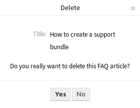

FAQ Zoom¶
Use this screen to see the details of an FAQ article. The FAQ Zoom screen is available, if you click on an FAQ article in any other screens.

FAQ Zoom Screen
This screen has an own menu and contains several widgets.
FAQ Content¶
The FAQ Zoom screen has an own menu.
- Back
- This menu item goes back to the previous screen.
- Edit
This menu item opens a new window to edit the FAQ article.

Edit FAQ Screen
- History
This menu item opens a new window to see the history of the FAQ article.

FAQ History Screen
- This menu item opens a PDF file to show the printer friendly version of the screen. You can save or print this PDF file.
- Link
This menu item opens the standard link screen of OTRS. FAQ articles can be linked to other FAQ articles or tickets. Existing links can also be managed here.

Link FAQ Screen
- Delete
Use this menu item to delete the FAQ article.
Delete FAQ Dialog
The Symptom, Problem, Solution and Comment widgets show the content of the FAQ article.
It is possible to rate an FAQ article in the Rating widget, whether the FAQ article is helpful or not. To rate an FAQ article, click on the Yes or No button in this widget.
Any user can rate an FAQ article only once. The number of positive and negative ratings will be displayed in the right sidebar.
FAQ Sidebar Widgets¶
The following widgets are located on the right sidebar.
The FAQ information widget lists all relevant attributes of the FAQ article.

FAQ Information Widget
FAQ articles can be linked to other objects. Use this widget to see the links between the FAQ article and other objects.

Linked Objects Widget
New links can be added by the Link menu item of the FAQ Zoom menu. Existing links can also be managed there.
To see the linked object details, click on an entry in this widget.
See also
Change setting LinkObject::ViewMode to Complex to display detailed information about linked objects.

Complex Linked Objects Widget